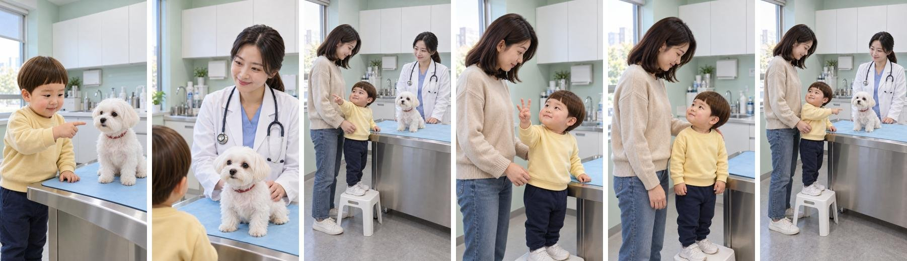
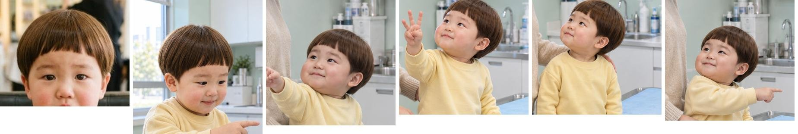
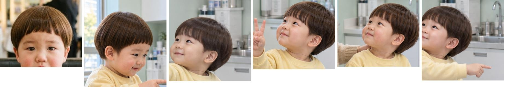
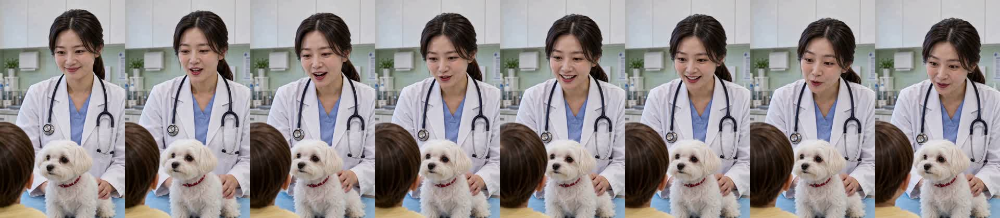
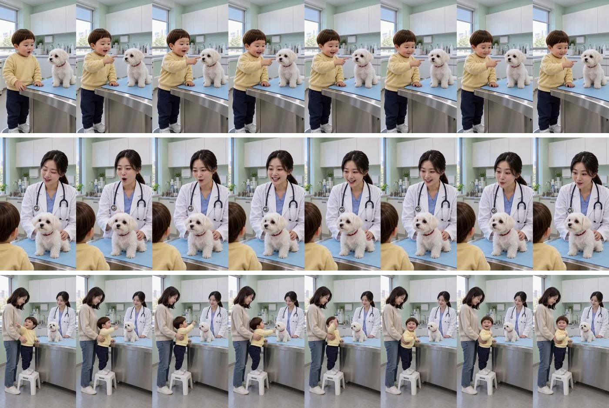
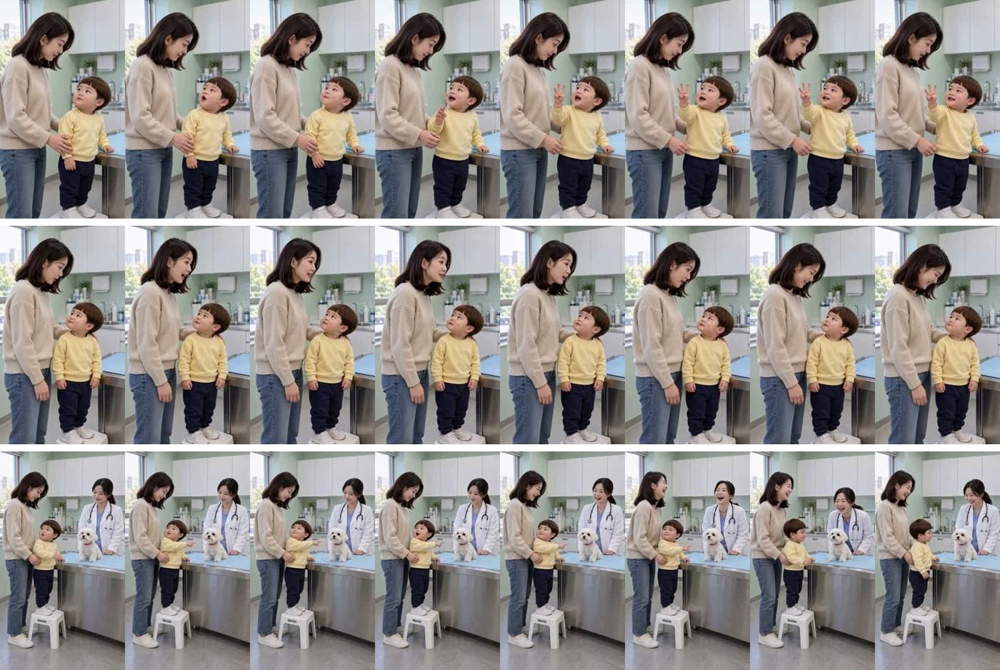

동물병원 «사람 세 마리!» 편
2026-10-31 · 18.6초 · 6컷 · 3사 소재 중 «1»(GPT) · 3사 대본 중 «1»(Claude) · 판 R15 · D0~D8 통과 · 아직 등록 안 함
봐 주셔야 할 것
- 도윤이 얼굴 — 시작 그림을 정본 얼굴로 바로잡은 뒤 찍었습니다(아래 «얼굴 대조»). 영상에서도 같은 아기로 보이는지.
- 웃음 흐름 — «콩이 한 마리 → 하나 둘 셋 → 사람 세 마리 → 사람은 세 명 → 콩이도 한 명»이 자연스럽게 이어지는지.
- 끝 컷 — «콩이도 한 명!» 뒤 수의사·엄마 웃음으로 끝납니다.
- 2번 수의사 새 대사 «우와, 숫자 잘하네! 또 해 볼까요?» — 대표님 «살쎄네 다시 쎄볼까요» 지적으로 «세» 소리를 뺐습니다. 받아쓰기 두 모델이 «숫자 잘하네»/«진짜 잘하네»로 갈렸습니다 — «숫자»가 들리는지. 말 앞 1.1초 쉼은 잘라 냈습니다.
대사 · 실측
| 컷 | 대사 | 받아쓰기 | 음높이 |
|---|---|---|---|
| 1 | 도윤 «콩이 한 마리!» | 공이 한 마리~ (콩이 오인식) | 457Hz |
| 2 | 수의사 «우와, 숫자 잘하네! 또 해 볼까요?» | small «와, 숫자 잘하네. 또 해볼까요?» · base «와 진짜 잘하네 또 해볼까요?» | 232Hz |
| 3 | 도윤 «하나, 둘, 셋!» | 일치 | 333Hz |
| 4 | 도윤 «엄마, 사람 세 마리!» | 일치 | 400Hz |
| 5 | 엄마 «도윤아, 사람은 세 명이라고 해요.» | 일치 | 242Hz |
| 6 | 도윤 «콩이도 한 명!» | 일치 | 390Hz |
도윤 음높이 기준선 330Hz 이상 통과 · 완성본 받아쓰기 대본 6줄과 같음
썸네일
흰 줄 «우와, 숫자 잘하네! 또 해 볼까요?» · 노란 줄 «사람 세 마리!» — 결말(«콩이도 한 명»)은 숨김
시작 그림 6장 (3번 넓은 화면이 장면 기준 그림)

얼굴 대조 — 정본(맨 왼쪽)과 각 컷
고친 뒤

고치기 전(대표님 «도윤이가 아닌 것처럼» — 어두운 머리·갸름한 얼굴)

2번 새 영상 프레임 (대표님 «채택»)

컷 프레임 (1~3번 · 4~6번 — 2번은 위 새 영상으로 바뀜)

